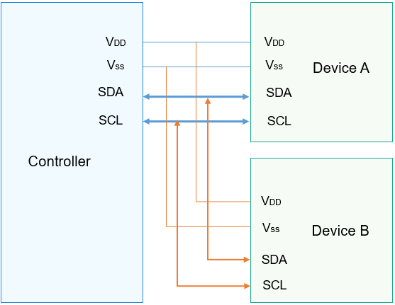

I2C Overview¶
Introduction¶
The Inter-Integrated Circuit (I2C) is a simple, bidirectional, and synchronous serial bus that uses merely two wires.
In an I2C communication, one controller communicates with one or more devices through the serial data line (SDA) and serial clock line (SCL), as shown in Figure 1.
I2C data transfer must begin with a START condition and end with a STOP condition. Data is transmitted byte-by-byte from the most significant bit to the least significant bit.
Each I2C node is recognized by a unique address and can serve as either a controller or a device. When the controller needs to communicate with a device, it writes the device address to the bus through broadcast. A device matching this address sends a response to set up a data transfer channel.
The I2C APIs define a set of common functions for I2C data transfer, including:
I2C controller management: opening or closing an I2C controller
I2C message transfer: custom transfer by using a message array
Figure 1 Physical connection diagram for I2C
Available APIs¶
Table 1 APIs available for the I2C driver
Capability | Function | Description |
|---|---|---|
I2C controller management | I2cOpen | Opens an I2C controller. |
I2cClose | Closes an I2C controller. | |
I2C message transfer | I2cTransfer | Performs a custom transfer. |
NOTE: All functions provided in this document can be called only in kernel mode.